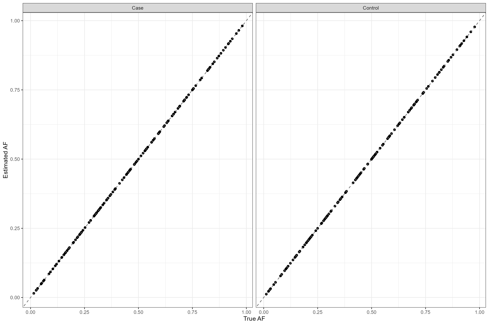

Case Control Allele Frequency (AF) Reconstruction R Package
This repository contains the source code for the CaseControlAF R package which can be used to reconstruct the allele frequency (AF) for cases and controls separately given commonly available summary statistics.
The package contains two functions:
- CaseControl_AF
- CaseControl_SE
Download the package
To install this package using BioConductor:
if (!require("BiocManager", quietly = TRUE))
install.packages("BiocManager")
BiocManager::install("CaseControlAF")To download this package using devtools in R:
require(devtools)
devtools::install_github("https://github.com/wolffha/CaseControlAF")CaseControl_AF
Use this function when you have the following statistics (for each variant)
- Number of cases
- Number of controls
- Odds Ratio (OR) or beta coefficient
- AF (allele frequency) for the total sample (cases and controls combined)
Usage
data: a dataframe with a row for each variant and columns for OR and total AF
N_case: an integer for the number of case samples
N_control: an integer for the number of control samples
OR_colname: a string containing the exact column name in ‘data’ with the OR
AF_total_colname: a string containing the exact column name in ‘data’ with the total AF
Returns a dataframe with two columns: AF_case and AF_control. The number of rows is equal to the number of variants.
CaseControl_SE
Use this function when you have the following statistics (for each variant)
- Number of cases
- Number of controls
- Odds Ratio (OR) or beta coefficient
- SE of the log(OR) for each variant
Code adapted from ReACt GroupFreq function available here: (https://github.com/Paschou-Lab/ReAct/blob/main/GrpPRS_src/CountConstruct.c)
Usage
data: a dataframe where each row is a variant and columns for the OR, SE, chromosome, and position
N_case: an integer for the number of case samples
N_control: an integer for the number of control samples
OR_colname: a string containing the exact column name in data with the odds ratios
SE_colname: a string containing the exact column name in data with the standard errors
position_colname: a string containing the exact column name in data with the positions of the variants
chromosome_colname: a string containing the exact column name in data with the chromosome of the variants. Note, sex chromosomes can be either characters (‘X’, ‘x’, ‘Y’, ‘y’) or numeric where X=23 and Y=24
sex_chromosomes: boolean, TRUE if variants from sex chromosome(s) are included in the dataset
do_correction: boolean, TRUE if data is provided to correct the estimates using proxy MAFs
remove_sex_chromosomes: boolean, TRUE if variants on sex chromosomes should be removed. This is only necessary if sex_chromosomes == TRUE and the number of XX/XY individuals per case and control sample is NOT known
CaseControl_SE has the following optional inputs:
If sex_chromosomes == TRUE and remove_sex_chromosomes == FALSE, then the following inputs are required:
N_XX_case: the number of XX chromosome case individuals
N_XX_control: the number of XX chromosome control individuals
N_XY_case: the number of XY chromosome case individuals
N_XY_control: the number of XY chromosome control individuals
If do_correction == TRUE, then data must be provided that includes harmonized data with proxy MAFs
correction_data: a dataframe with the following EXACT column names: CHR, POS, proxy_MAF, containing data for variants harmonized between the observed and proxy datasets
Returns the data dataframe with three additional columns with names: MAF_case, MAF_control and MAF_total containing the estimated minor allele frequency in the cases, controls, and total sample. The number of rows is equal to the number of variants. If proxyMAFs_colname is not NA, will include three additional columns containing the adjusted estimated MAFs (MAF_case_adj, MAF_control_adj, MAF_total_adj)
NOTE: This method assumes we are estimating the minor allele frequency (MAF)
A small example
# load the data
data("sampleDat")
# this sample data contains 500 variants from chromosome 1 of Pan-UKBB Diabetes GWAS
nCase_sample = 16550
nControl_sample = 403923
head(sampleDat)
# A tibble: 6 × 11
# Rowwise:
# CHR POS REF ALT true_maf_case true_maf_control beta SE gnomad_maf OR true_maf_pop
# <chr> <int> <chr> <chr> <dbl> <dbl> <dbl> <dbl> <dbl> <dbl> <dbl>
#1 chr1 226824710 C T 0.205 0.204 0.000344 0.0147 0.204 1.00 0.204
#2 chr1 117812346 G A 0.448 0.447 -0.00139 0.0120 0.446 0.999 0.447
#3 chr1 230838863 C T 0.165 0.164 0.00422 0.0162 0.183 1.00 0.164
#4 chr1 93121792 ATT A 0 0 -0.106 3.53 0.000108 0.900 0
#5 chr1 240236388 G A 0.0000111 0.0000378 -1.25 1.25 0.0000882 0.285 0.0000367
#6 chr1 12385196 G A 0.0139 0.0140 -0.0153 0.0505 0.0116 0.985 0.0140
af_method_results <- CaseControl_AF(data = sampleDat,
N_case = nCase_sample,
N_control = nControl_sample,
OR = "OR"",
AF_total_colname = "true_maf_pop")
head(af_method_results %>% select(AF_case, AF_control))
# AF_case AF_control
#1 2.041813e-01 2.041254e-01
#2 4.468049e-01 4.471490e-01
#3 1.647775e-01 1.641968e-01
#4 0.000000e+00 0.000000e+00
#5 1.077692e-05 3.776488e-05
#6 1.381395e-02 1.402353e-02
# visualise the bias in the results compared to the published true AFs
plotdata <- data.frame(estimated = c(af_method_results$AF_case, af_method_results$AF_control),
true = c(sampleDat$true_maf_case,
sampleDat$true_maf_control),
status = c(rep("Case", nrow(af_method_results)),
rep("Control", nrow(af_method_results))))
# plot the results
ggplot(plotdata, aes(x = true, y = estimated)) +
geom_point() +
geom_abline(intercept = 0, slope = 1, linetype = "dashed", color = "grey40") +
xlab("True AF") + ylab("Estimated AF") +
theme_bw() +
facet_wrap(~status)
se_method_results <- CaseControl_SE(data = sampleDat,
N_case = nCase_sample,
N_control = nControl_sample,
OR = "OR",
SE = "SE"
chromosome_colname = "CHR",
position_colname = "POS",
sex_chromosomes = F,
do_correction = F)
head(se_method_results %>% select(MAF_case, MAF_control, MAF_total))
# MAF_case MAF_control MAF_total
#1 1.764905e-01 1.764405e-01 1.764425e-01
#2 3.263835e-01 3.266896e-01 3.266776e-01
#3 1.392353e-01 1.387297e-01 1.387496e-01
#4 2.513875e-06 2.794421e-06 2.783379e-06
#5 1.946826e-05 6.821993e-05 6.630105e-05
#6 1.250050e-02 1.269041e-02 1.268294e-02
# visualize the bias in results compared to the published minor allele frequency (MAF)
plotdata <- data.frame(estimated = c(se_method_results$MAF_case, se_method_results$MAF_control),
true = c(sampleDat$true_maf_case,sampleDat$true_maf_control),
status = c(rep("Case", nrow(se_method_results)),
rep("Control", nrow(se_method_results))))
# plot the results
ggplot(plotdata, aes(x = true, y = estimated)) +
geom_point() +
geom_abline(intercept = 0, slope = 1, linetype = "dashed", color = "grey40") +
xlab("True MAF") + ylab("Estimated MAF") +
coord_cartesian(xlim= c(0,.5), ylim= c(0,.5)) +
theme_bw() +
facet_wrap(~status)
Here we observe distinct bias, which increases as the MAF increases. We will then use the correction framework described in our paper and implemented here to use gnomAD as a proxy for the true MAF_total.
corr_dat <- data.frame(CHR = sampleDat$CHR, POS = sampleDat$POS, proxy_MAF = sampleDat$gnomad_maf)
se_method_results <- CaseControl_SE(data = sampleDat,
N_case = nCase_sample,
N_control = nControl_sample,
OR_colname = "OR",
SE_colname = "SE",
chromosome_colname = "CHR",
position_colname = "POS",
sex_chromosomes = F,
do_correction = T,
correction_data = corr_dat)
plotdata <- data.frame(true_maf_pop = c(sampleDat$true_maf_case, sampleDat$true_maf_case,
sampleDat$true_maf_control, sampleDat$true_maf_control),
maf_pop = c(se_method_results$MAF_case,
se_method_results$MAF_case_adj,
se_method_results$MAF_control,
se_method_results$MAF_control_adj),
pop = c(rep("Case", nrow(sampleDat)),
rep("Case", nrow(sampleDat)),
rep("Control", nrow(sampleDat)),
rep("Control", nrow(sampleDat))),
type = c(rep("Uncorrected", nrow(sampleDat)),
rep("Corrected", nrow(sampleDat)),
rep("Uncorrected", nrow(sampleDat)),
rep("Corrected", nrow(sampleDat))))
ccc <- data.frame(type = c("Corrected", "Corrected", "Uncorrected", "Uncorrected"),
pop = c("Case", "Control", "Case", "Control"),
ccc = c(CCC(sampleDat$true_maf_case,
se_method_results$MAF_case_adj)$rho.c$est,
CCC(sampleDat$true_maf_control,
se_method_results$MAF_control_adj)$rho.c$est,
CCC(sampleDat$true_maf_case,
se_method_results$MAF_case)$rho.c$est,
CCC(sampleDat$true_maf_control,
se_method_results$MAF_control)$rho.c$est),
x = c(0.07, 0.07, 0.07, 0.07),
y = c(0.4, 0.4, 0.46, 0.46))
ccc$ccc <- round(ccc$ccc, 4)
ccc$label = paste0("CCC = ", ccc$ccc)
ggplot(plotdata %>% filter(true_maf_pop > 0.01),
aes(x = true_maf_pop, y = maf_pop, color = type)) +
geom_point(alpha = 0.5) +
geom_text(data = ccc, aes(x = x, y = y, label = label, colour = type), show.legend = F) +
coord_cartesian(xlim = c(0,.5), ylim = c(0,0.5)) +
scale_color_manual(values = c("grey40", "black")) +
geom_abline(slope = 1, intercept = 0, linetype = "dashed", color = "darkred") +
ggtitle("Estimated vs True With gnomAD Adjustment") +
xlab("True MAF (Y)") + ylab("Estimated MAF (Y')") +
theme_bw() +
facet_wrap(~pop) +
theme(legend.position = "bottom",
plot.title = element_text(size = 16),
axis.title = element_text(size = 14),
axis.text = element_text(size = 12),
strip.text = element_text(size = 14),
legend.text = element_text(size = 14),
legend.title = element_blank())